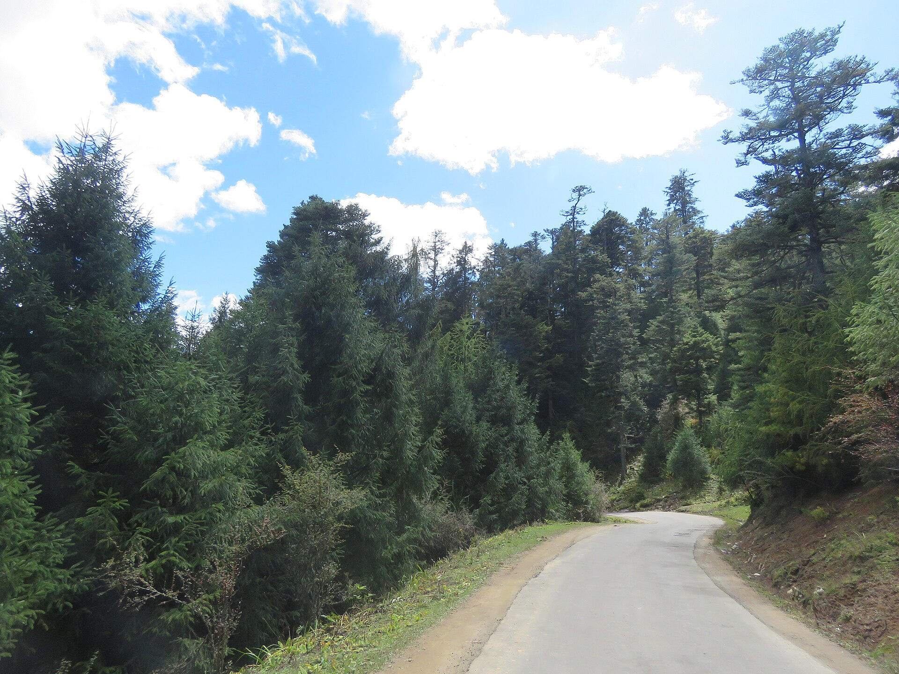
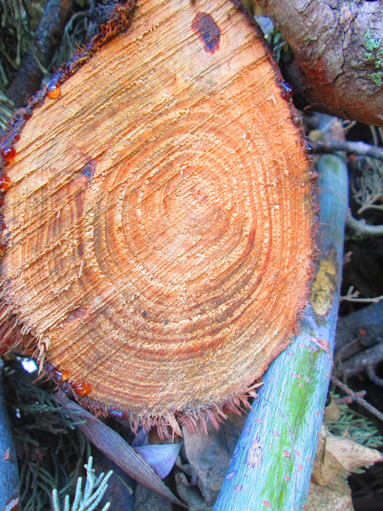
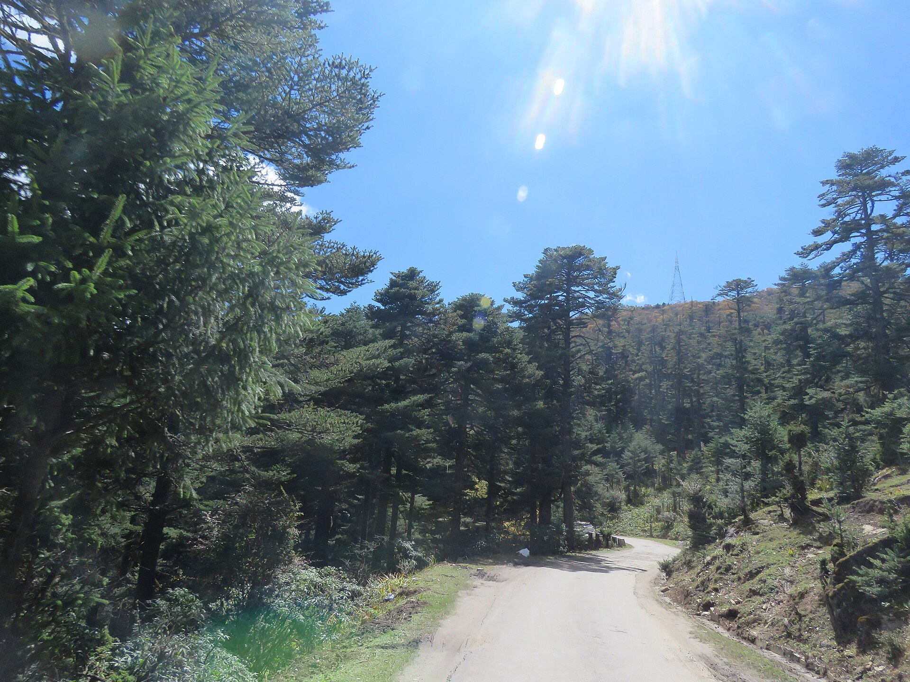
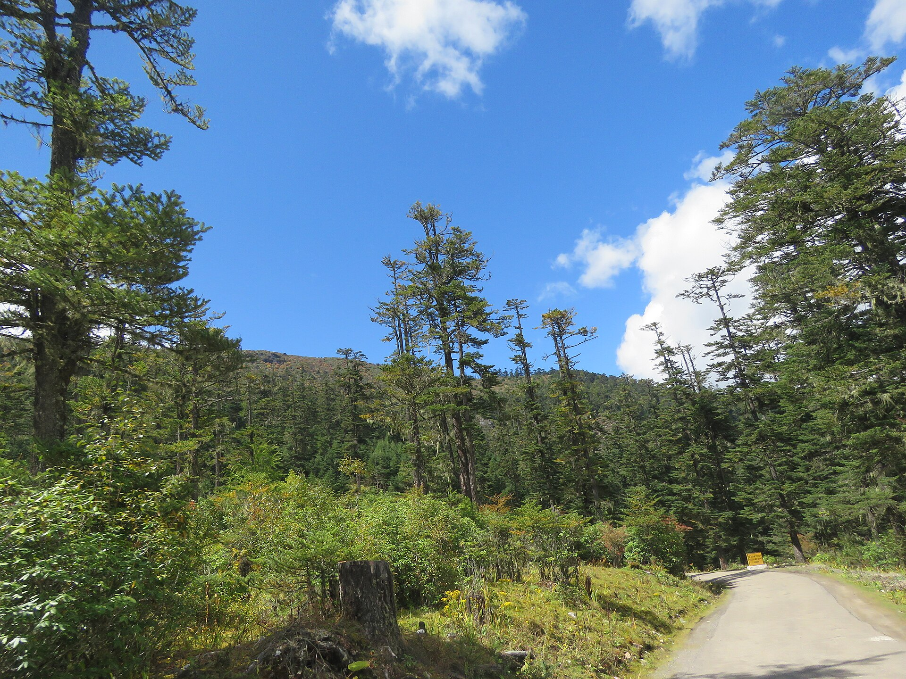
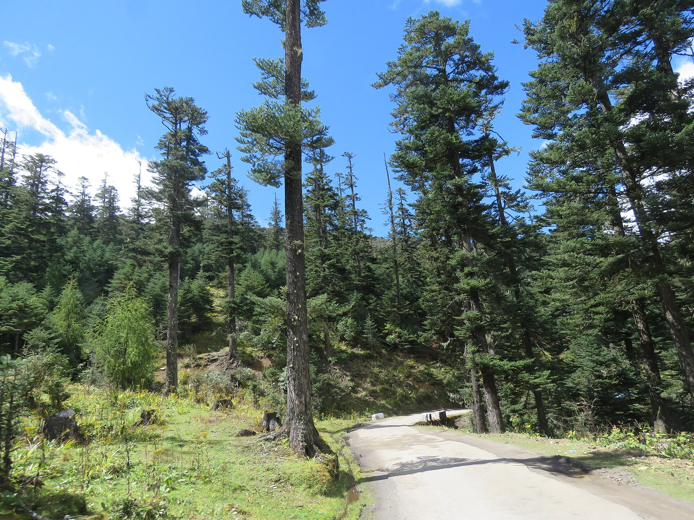

Course image · CC BY-SA 4.0
Course image · CC BY-SA 4.0
Age and Growth
of Trees
Determination of age · growth and increment · CAI, MAI and the culmination · increment percentage
Royal University of Bhutan
Forest Resources Planning and Management Division
Learning outcomes
Unit VII
This unit needs logarithms (outcome 3) and nth roots or powers (outcome 8). A plain four-function calculator will not get you through the assessment.
Age turns a measurement into a rate
Unit VII
A tree's size tells you nothing about its productivity until you know how long it took to get there. Two 40 cm trees, one aged 30 years and one aged 120, are entirely different propositions.
The productivity question. A site growing 300 m3/ha in 40 years is worth far more than one taking 120 years to do the same.
Size divided by time. Everything in Sections B, C and D of this unit is one way or another of expressing this single quantity.
Money has a time value. Without age there is no rate of return, and forestry cannot be compared with any other use of the land.
When to harvest a plantation — fixed by the culmination of the MAI, in Section C.
How much may be felled each year without depleting the forest — an increment figure.
Height at a stated age. Without the age, top height means nothing at all.
Write this down and keep it: age converts a measurement into a rate. Diameter is a measurement; diameter per year is a rate. Only rates can be compared between sites, species and treatments.
How the unit is organised
Unit VII
How old is this tree, when nobody wrote down the year it germinated?
What exactly is growing, and what shape does a lifetime of growth take?
How much per year — and when should the crop be cut?
How fast, expressed as a rate of return — the language of finance.

Vinayaraj · CC BY-SA 4.0.jpg){kind=link}
Age of Trees
From records · from appearance · from whorls · from periodic measurements · from the rings themselves
Why the age of a tree is hard to know
Unit VII
The record of germination almost never exists. A plantation may have a planting year; natural forest has nothing at all.
Annual rings record the age exactly — but reading them means felling or boring. Both are destructive; neither is possible on every tree.
Age from germination? From planting out? From the seeding felling? These differ by several years, and the difference is systematic.
A plantation record gives the planting year. Seedlings spend one to three years in the nursery first. A stand recorded as planted in 2000 may have germinated in 1998 — and every age computed from that record is short by two years, for every tree, always in the same direction.
Rings counted at a stump or at breast height give the age at that height, not from germination. The years the tree spent growing up to that height must be added back — see slide 13.
State the datum. An age figure without saying what it is measured from is as incomplete as a volume figure without saying over or under bark — the same discipline from Unit V, applied to a different quantity.
Age from existing records
Unit VII
In the shelterwood system, the cut that opens the canopy so that seed can fall and germinate. It is the nearest thing natural regeneration has to a planting date — and it is recorded in the working plan.
In a well-documented plantation of a single planting year, with no beating up, this is the most accurate method available — and it costs nothing.
These methods are not very accurate, for three reasons.
The plan says "compartment 7, planted 1995". It does not say when the particular tree in front of you germinated.
Failed patches are replanted a year or two later. Those replacements carry the compartment's planting year in the record and are younger in fact.
Some species and stands take up to 40 years to regenerate fully. The age variation within one "even-aged" stand may be 40 years.
A stand recorded as a single age may in truth span four decades — an error larger than the whole rotation of some plantation crops.
Age from general appearance
Unit VII
| Indicator | Young tree | Older tree | Note |
|---|---|---|---|
| Size and relative taper of the stem | Very tapering bole | Relatively less tapering bole | The same fact as the rising form factor of Unit V, seen from the other side |
| Size and shape of the crown | Chir pine: conical | Chir pine: rounded | Changes with age in some species only — not a general rule |
| Colour and condition of the bark | Sal: rough, fairly cracked, darker | Sal: generally smooth, light-coloured | Species-specific. In many pines and oaks the direction is the opposite |
These methods can be handled fairly accurately only by a person of great practice and experience. It is basically a subjective judgement, and the characters vary from place to place because of differences in locality factors.
Because it is the method that tells an experienced forester the record is wrong. Judgement is the cross-check on the arithmetic — it cannot be examined, and it cannot be dispensed with.
Age from whorls of branches and annual shoots
Unit VII
Many conifers produce exactly one whorl of branches a year. Count the whorls, and you have counted the years.
The lowest whorls are shed as the crown lifts and their scars grow over, so a ground count always undercounts. The correction estimates the years taken to reach the lowest whorl still visible.
Broadleaves, which do not whorl · conifers on poor sites that miss a year · any tree browsed or with a broken leader, which makes a false or doubled whorl.

Age from periodic measurements
Unit VII
The tree is measured three times at equal intervals. No rings are counted and no judgement is used — which is why this method also works on trees that have no annual rings.
| d1 | the initial diameter |
| d2, d3 | diameters at the subsequent periodic measurements |
| P1 | growth per unit diameter per year, first period |
| P2 | growth per unit diameter per year, second period |
| T | length of each period, in years |
As a tree gets bigger its proportional growth rate falls. S measures how fast that rate falls as diameter rises. Once you know how quickly the rate is decaying, you can run the decay backwards to find how long the tree has been growing — which is exactly what 1/(P1S) does.
Any base will do, provided you use the same base throughout — the base cancels in a ratio. The source uses base 10; natural logs give the identical S.
Worked example 1 · the two growth rates
Unit VII
| Year of measurement | 1970 (d1) | 1975 (d2) | 1980 (d3) |
|---|---|---|---|
| Diameter (cm) | 30 | 33 | 36 |
3 ÷ 165 = 0.018181818… recurring. Write 0.018182 and 0.018 side by side and ask yourself what difference one thousandth could possibly make to the answer. Take a vote on it, then turn over.
Worked example 1 · the age, and the rounding trap
Unit VII
P1/P2 = 0.02 ÷ 0.018182 = 1.1 exactly, and d2/d1 = 33 ÷ 30 = 1.1 exactly. The ratio of two identical logarithms is 1, in any base. The example was built that way.
Unit V said carry six significant figures. Unit VI showed a result resting on two centimetres. Here a rounding in the third decimal place moves a tree's age by five years.
Age of a felled tree · counting the rings
Unit VII

Serap554 · CC BY-SA 4.0{kind=link}
In species with a distinct annual growth cycle the cambium lays down one ring a year: pale, wide-celled early wood in the spring flush, then dense, thick-walled late wood as growth slows. The visible boundary between one year's late wood and the next year's early wood is the ring.
| At a stump, 0.3 m | add roughly 2–4 years |
| At breast height, 1.3 m | add roughly 3–8 years |
| Suppressed under shade | may be 15 years to reach 1.3 m |
The correction is obtained by felling or boring a few small trees of known height and counting. A working plan quoting ages from ring counts without stating the correction used is incomplete.
The increment borer
Unit VII
gives the age at breast height — add the years taken to reach 1.3 m
gives the radial growth of the last n years
gives the diameter growth of the last n years — the input to Section D
The rings record growth on one side only. Diameter grows by twice the ring width, because wood is laid on all round. Past diameter = present diameter − 2 × (width of the outermost n rings).
When rings lie
Unit VII
Ring counting is exact only where the growing season is sharply seasonal. Four things go wrong, and each has a distinct cause and a distinct direction of error.
A drought or a defoliation part way through the season stops growth; when conditions improve the cambium restarts and lays a band that looks like late wood in mid-year.
Overestimates the age. A false ring usually fades out round the circumference instead of closing cleanly.
In a very bad year, or in a heavily suppressed tree, the cambium may not divide at all round part of the stem. The ring is simply not there on that radius.
Underestimates the age. This is why several radii and several trees are cross-dated.
In the wet subtropical broadleaf forests of the southern foothills there is no strong dry season to arrest growth, so many species form no clear annual boundary at all.
Ring counting there is unreliable to useless — which is exactly why the periodic measurement formula of Method 4 exists.
Some species flush twice in a season and lay two boundaries in one year.
Overestimates the age, and cannot be detected from a single core at all.
Never age a stand from one core. Take several, cross-check them against each other and against any record that exists, and report the age as an estimate with a stated range — not as a single number.
The methods compared
Unit VII
| Method | What it needs | Accuracy | Destructive? | Use it when |
|---|---|---|---|---|
| 1 · Existing records | A working plan or planting register | Poor to fair | No | A documented plantation of one planting year |
| 2 · General appearance | Experience — nothing else | Subjective | No | As a cross-check that the record is wrong |
| 3 · Whorls and shoots | A whorling conifer, and eyes | Approximate | No | Young conifers where the whorls are still visible |
| 4 · Periodic measurements | Three measurements over 10+ years | Good, objective | No | Species with no annual rings — where permanent plots exist |
| 5 · Boring at breast height | An increment borer | Very good | Slightly | Sample trees in permanent plots |
| 6 · Ring count on a stump | A felled tree | Exact, if rings are distinct | Totally | After felling — and to calibrate every other method |
The best method is usually the one your predecessor made possible. Method 4 needs permanent plots established a decade ago. If nobody established them, the option does not exist — whatever the textbook says.
In practice a forester uses the record, checks it against appearance, and confirms it on a few bored sample trees. Any one alone is weak; the three together are strong.
Review questions · Age of trees
Unit VII

Vinayaraj · CC BY-SA 4.0.jpg){kind=link}
Growth and
Increment
Elongation and thickening · primary and secondary meristem · increment defined · the growth curve and the increment curve
What growth is
Unit VII
Growth is the elongation and the thickening of roots, stems and branches — and it causes a tree to change in weight, in volume, and in form.
(the cambium)
The primary meristems sit at the tips — the apical bud of the leader, the tip of each branch, the tip of each root. The cambium is a thin sleeve producing new wood and bark between the old wood and the old bark.
Drive a nail into a stem at 1.3 m. Fifty years later it is still at 1.3 m — the stem below does not elongate. But it will be buried, because the stem around it thickens. Every forester has seen a fence wire swallowed by a tree.

Because the stem does not elongate below the tip, breast height stays breast height. That is what makes the breast-height mark a stable, repeatable point to re-measure decade after decade — provided every crew uses the same reference height, which is fixed by the governing protocol (1.37 m in Bhutan’s Second NFI; 1.30 m in many international manuals).
Why study growth?
Unit VII
Whoever does business with forestry — managing natural forest or plantations — wants to assess the benefits out of it and the proper techniques for its management. Four pieces of information are necessary.
The age–diameter curve — sibling of Unit VI's height–diameter curve. Given a diameter, it predicts an age.
The three-way relation between them. Set it out in a table and you have a yield table.
When to cut. Section C answers this precisely, through the culmination of the MAI.
How fast, as an absolute amount in Section C and as a percentage in Section D.
Those four items map almost exactly onto the rest of this unit. The list is not arbitrary — it is the unit.
A forest is a slow investment: between planting and harvesting lies a working lifetime. Knowing how fast the asset grows is the only basis for deciding to plant, to thin, or to wait.
The age–diameter curve
Unit VII
Bore or fell a sample across the whole diameter range, count the rings on each, plot age against diameter, draw a smooth curve. The same technique, a new pair of variables.
A diameter is cheap to measure on every tree. An age is expensive to measure on any tree. The curve lets the cheap measurement stand in for the dear one.
Each further centimetre costs more years than the last. A misread diameter is most costly at the large end — where the height–diameter curve was most forgiving.
The relation holds only within one species, one site quality, one stand structure. A suppressed 20 cm tree may be eighty years old while a dominant 20 cm tree on the same hectare is twenty-five.
What makes one tree grow faster than another
Unit VII
A poplar and a yew on one site differ by an order of magnitude. No silviculture closes that gap.
Decided once, at planting — and not revisitable for a rotation.
Soil depth, texture, drainage, nutrients — and aspect.
In Bhutan's terrain a south and a north slope at one elevation are different sites entirely.
Rainfall, temperature, and the length of the growing season.
A stand at 500 m and one at 3 000 m are not comparable, whatever the species.
The same genes on the same site grow very differently as a dominant and as a suppressed stem.
This is what Unit VI's basal area measures.
Thinning, weeding, drainage, fertilising, pruning.
Notice what they share: every one works by reducing competition or improving the site.
Species and climate set the ceiling. Site sets what is achievable on this ground. Competition and silviculture decide how much of that potential is realised — and a forester spends a career on the last two, because the first two cannot be changed.
Increment
Unit VII
volume, quality, price or value of trees or crops during a given period
Increment is not only physical. A stand whose timber has become more valuable per cubic metre has put on increment in value without adding a single cubic metre of wood. That idea underpins the whole of forest economics.
The rate is slow at first, becomes rapid at a certain age reaching an optimum, then slows again — but it never stops until the tree dies.
With increasing age the forces of decay become more active than the increment. A hollowing, rotting veteran may lose more wood to decay each year than its cambium adds, so its net volume falls. It is still growing — and still losing ground.
The age at which the highest rate is reached is different for different parameters — diameter, height, form, volume. A single "growth rate" for a tree is meaningless without saying growth in what.
The growth curve · cumulative size against age
Unit VII
Youth — slow, then accelerating · the steep middle — full crown, fastest growth · old age — flattening.
Height stops while diameter continues — which is exactly why the height–diameter curve flattened at the large end.
The increment curve is the slope of this one. Steepest here = maximum there; flat here = near zero there.
The increment curve · annual addition against age
Unit VII
Near zero at first · a peak where the growth curve is steepest · declining as the growth curve flattens. Put the two one above the other with the same age axis and the peak sits exactly under the steepest slope.
Each parameter is built from the one before, with a lag. Basal area goes with d2, so it keeps rising after diameter increment has begun to fall. Volume needs basal area and height, so it peaks later still.
In an over-mature tree the curve crosses zero — the negative increment of slide 23. It is why a working plan removes over-mature trees rather than leaving them to grow.
Review questions · Growth and increment
Unit VII

Vinayaraj · CC BY-SA 4.0.jpg){kind=link}
CAI, MAI and
the Culmination
Classification of increment · current, periodic, total and mean annual · the relationship between them · culmination and rotation
The four classes of increment
Unit VII
The increment — in diameter, height or volume alike — is classified only by the period to which it relates. Same tree, same growth, four different periods of accounting.
| Class | The period it relates to | What you must be able to say about it | |
|---|---|---|---|
| 1 | Current annual increment c.a.i | A single year | Rarely recoverable from ordinary annual tape measurements — the growth is smaller than the measurement error, so p.a.i is used instead. It can be estimated from dendrometers, tree rings or a growth model |
| 2 | Periodic annual increment p.a.i | Any short period | An average annual increment over that period — measure at each end, subtract, divide by the years |
| 3 | Total increment T.I | Origin to the age of cutting | The sum of the c.a.i — and therefore it represents the volume of the tree or crop. Everything a tree contains, it grew |
| 4 | Mean annual increment m.a.i | Origin to a given age | Total increment ÷ that age. For part of the age it is the periodic m.a.i; at the rotation age it is the final m.a.i |
the instantaneous rate — this year alone
a local average over a short window
a running average, always from year zero
c.a.i is rarely measurable by tape — so we use p.a.i
Unit VII
One year's growth is simply not detectable.
The error did not grow with the period. The growth did.
When the signal is small, lengthen the period. It is the same reasoning that puts several plots in an inventory rather than one big one.
p.a.i is an average: it tells you nothing about what happened within the period. A stand released by a thinning in year three gives the same p.a.i as one that grew steadily.
c.a.i is not unmeasurable in principle. It is too small and too variable to recover from ordinary annual tape measurements. It can be estimated with dendrometer bands, tree-ring measurement, repeated high-precision observation, or a fitted growth model.
Worked example 2 · p.a.i from a permanent plot
Unit VII
A permanent plot in blue pine, planted in 1985, carried:
| 2015 | 2025 |
|---|---|
| 148 m3/ha | 226 m3/ha |
Find the p.a.i, and the m.a.i in 2025.
The stand is currently growing faster than its lifetime average, so the m.a.i is still rising and has not yet culminated. That means mean annual volume production is still increasing under the assumed yield sequence. It does not by itself decide whether the stand should be harvested.
Worked example 3 · building the m.a.i and p.a.i columns
Unit VII
| Age (yr) | Volume (m3/ha) | m.a.i = V ÷ A | Period | p.a.i |
|---|---|---|---|---|
| 5 | 8 | 1.60 | — | — |
| 10 | 40 | 4.00 | 5–10 | 6.40 |
| 15 | 95 | 6.33 | 10–15 | 11.00 |
| 20 | 165 | 8.25 | 15–20 | 14.00 |
| 25 | 240 | 9.60 | 20–25 | 15.00 |
| 30 | 315 | 10.50 | 25–30 | 15.00 |
| 35 | 385 | 11.00 | 30–35 | 14.00 |
| 40 | 445 | 11.13 | 35–40 | 12.00 |
| 45 | 495 | 11.00 | 40–45 | 10.00 |
| 50 | 535 | 10.70 | 45–50 | 8.00 |
p.a.i belongs to a period, not to a single age — which is why it is written against 5–10, 10–15 and so on. Put it against a single year and you will misread the crossing point.
Cut at 25 — when the trees are growing fastest — and you cut too early. Carry to 50 and you hold the crop for ten years while its average productivity declines.
The relationship between c.a.i and m.a.i
Unit VII
m.a.i is total volume ÷ age, and both are positive quantities — a standing tree has volume and has age, so the quotient cannot be negative. c.a.i is a difference, and a difference can go either way.
The culmination of the mean annual increment
Unit VII
Each year the stand grows more than its running average, so it pulls the average up. The m.a.i is rising.
The year's growth exactly equals the running average, so the average does not move. This is the peak of the m.a.i curve.
Each year the stand grows less than its running average, so it drags the average down. The m.a.i is falling.
Up to it, leaving the stand standing still improves its lifetime performance. Beyond it, keeping the stand reduces its average annual production. It is the moment the crop stops earning its keep.
Why they cross exactly at the culmination
Unit VII
- A batsman averages 40. He scores 70. The average rises — the new score is above it
- He then scores 20. The average falls — the new score is below it
- The innings in which his average stops rising and starts falling is the one in which he scores exactly his average
Now substitute: m.a.i is the batting average, c.a.i is this innings' score. The average peaks exactly when the new value equals the running average — true of any running average whatsoever.
dV/dA is the current annual increment. V/A is the mean annual increment. So the m.a.i is stationary exactly where the two are equal.
Students who do not use calculus have received the full proof, not a lesser version. And the generalisation is what makes it useful: any running average peaks where the current value crosses it, so the age of maximum average annual production must be the age at which current production falls to the average.
Culmination and the rotation
Unit VII
for maximum mean annual volume production it identifies one rotation — it is not, by itself, the rotation that will be adopted
Cut every stand at that age and, over the long run, the forest produces the greatest average annual volume it is capable of. That is the classical sustained-yield criterion — one criterion among several.
Large trees are worth more per m3. The financial rotation is usually longer.
Money tied up for 40 years must earn its keep. The economic rotation is usually shorter.
For protection forest, conservation or habitat, the rotation may be far longer — or may not exist at all.
11.00 at 35 · 11.13 at 40 · 11.00 at 45. Ten years either side costs about 1 %.
The m.a.i curve is flat near its peak, so the rotation can move a decade either way without material loss of production. In a Bhutanese management plan the age finally adopted is set by biodiversity and habitat objectives, watershed protection, livelihood and rural timber demand, regeneration, carbon, cultural values, financial return, and the legal prescription of the approved plan — with the culmination as the biological benchmark against which those choices are judged.
Review questions · CAI, MAI and culmination
Unit VII

Vinayaraj · CC BY-SA 4.0.jpg){kind=link}
Increment
Percentage
Simple interest · compound interest · Pressler's formula · obtaining the past size by boring at breast height
Growth as a rate of return
Unit VII
Increment percentage expresses growth as a proportion of the growing stock already there, per year. It is a rate of return on standing timber — exactly as an interest rate is a rate of return on money.
In absolute terms the big tree wins ten to one. In proportional terms the pole wins five to one. They answer different questions.
A standing tree is capital. Leaving it standing is choosing to keep capital invested in it. If it returns 1 % and the alternative returns 5 %, fell it — that is financial maturity.
Increment percentage falls with age and size. You remove the trees whose percentage return has fallen, and give their growing space to those whose has not.
Three formulae are in common use. They give three different answers from the same data, and the differences are not small. A percentage quoted without naming the formula is not a usable number.
The three growth percentage formulae
Unit VII
| So | size of the parameter at the beginning of the growth period | Sn | size at the end of the growth period | n | number of units of time |
"Size of the parameter" may be diameter, basal area, height or volume. The formulae do not care — do not think of these as volume formulae.
The denominator never changes: every year's growth is measured against the tree as it was at the beginning. No compounding — which is exactly why it reads highest.
What constant annual rate, compounded, carries the tree from So to Sn in n years? The base grows each year, because the previous increment has been added to it.
Avoids the complication of the compound formula. Dividing by the sum is — bar the factor of 2 — dividing by the average size, which is why it lands close to compound with no roots at all.
The nth root is the reciprocal power: x(1/n). Find that key now and compute one before the next slide — it is the commonest source of lost marks in this unit.
Recovering the past diameter by boring
Unit VII
All three formulae need So — the size n years ago. Nobody measured the tree n years ago. So the tree is made to give up its own record.
Bore at breast height · measure the width of the outermost n rings on the core · double it · subtract from the present diameter.
The rings sit inside the bark, so a core gives diameter under bark. Measure the present diameter over bark with a tape and you are comparing an over-bark present with an under-bark past — and the growth is overstated. The Unit V discipline, applied here.
A core is a radius. The rings record growth on one side only. Diameter grows by twice the ring width. It will still catch people out.
Worked example 4 · one tree, three formulae
Unit VII
It divides by the original 46 for all ten years. Compound divides by a base that grows towards 65 — the source's words: "the % is low, because over the period the So goes on increasing by adding the previous increment."
3.42 against compound's 3.52 — within a tenth of a point, and with no roots at all. That is why a nineteenth-century forester without a calculator used it.
Worked example 5 · the same three, applied to volume
Unit VII
The present volume of a chir pine is 400 cft, and the volume 10 years ago was 300 cft. Find the increment percentage by all three formulae.
Every term is a ratio: So and Sn appear only as differences and quotients. Cubic feet or cubic metres, the answer is identical. If your answer changes with the units, the arithmetic is wrong.
This example uses volume; the last used diameter. They are not equal for the same tree — volume grows roughly as d2h, so volume percentage runs at two to three times diameter percentage.
For any positive growth, and any parameter:
It is not an accident of one dataset. Ask the class to state it in their own words before you give it to them.
The three formulae compared
Unit VII
| Simple interest | Compound interest | Pressler's | |
|---|---|---|---|
| Growth measured against | The starting size, all n years | A base that grows each year | The average of start and end |
| Needs | Arithmetic only | An nth root | Arithmetic only |
| On the worked examples | 4.13 % · 3.33 % | 3.52 % · 2.92 % | 3.42 % · 2.86 % |
| Reads | Highest, always | Middle | Lowest, and close to compound |
| As n grows | Overstates badly | Stays correct | Stays close to compound |
| Use it for | Short periods, rough work | Any financial comparison — the only one comparable with a bank rate | Field estimation without a calculator — the traditional forester's tool |
Over one or two years the three converge and the choice hardly matters. Over ten years simple overstates by about a fifth. Over fifty it is badly wrong.
Always state which formula was used. A growth percentage that does not name its formula cannot be checked, cannot be compared with another plan, and should not be relied on.
Review questions · Increment percentage
Unit VII
Sources of error and quality control
Unit VII
- Miscounting a ring or two on an unclear core
- Genuine variation in growth between trees and between years
- Reading a ring width to the nearest half millimetre
- Judging how many years a tree took to reach breast height
Fixed by measuring more — more cores, more radii, more trees.
- A core that misses the pith — undercounts on every tree it happens to
- Forgetting to double the ring width — the commonest error in Section D
- Ignoring the years to reach breast or stump height — understates every age
- The nursery offset in plantation records — understates every age alike
- An over-bark present against an under-bark past — overstates all growth
- Premature rounding — five years on one tree, as on slide 12
habits
Bore several radii and cross-check · record the height at which every count was taken · state the datum for every age · state the formula for every percentage · carry full precision to the end.
Age and growth in Bhutanese forest management
Unit VII
Increment is the quantity a management plan is built on. Everything in this unit ends in a decision that somebody has to sign.
An FMU or community-forest plan sets the annual cut against the increment the forest actually puts on. Harvest above increment is depletion, whatever the plan says.
Permanent sample plots re-measured on a five- to ten-year cycle give the p.a.i that tells a Division whether a stand is responding to management.
Culmination of the m.a.i is the biological benchmark. The rotation adopted also answers to biodiversity, watershed, livelihood, carbon, cultural and legal objectives.
Repeated increment measurement is how a drought year, an insect outbreak or a shift in growing season is detected at all — a declining p.a.i is often the first evidence.
A community-forest management plan must state a sustainable annual harvest of timber, fuelwood and poles. Members' own observation of which stands are growing well is combined with plot re-measurement — local ecological knowledge and formal measurement together, not one instead of the other.
Growth data also supports carbon reporting, habitat-tree retention, deadwood recruitment, regeneration monitoring and the assessment of forest health. Volume is one variable this unit produces, not its purpose.
The unit on one page
Unit VII
S = (logP₁−logP₂)
÷ (logd₂−logd₁)
Age = 1/(P₁S)
m.a.i = V ÷ A
T.I = the volume
c.a.i = one year
c.a.i = m.a.i
= rotation of max
volume production
> Pressler
S₀ = Sₙ − 2(ring width)
Back to the sentence from slide 3: age converts a measurement into a rate. Point at every place on this page where that has happened — p.a.i, m.a.i and every growth percentage. That is what the unit was for.
Questions for assessment and practice
Unit VII
Practical, preparation and further reading
Unit VII
- Extract cores with an increment borer from designated practical trees
- Count the rings and determine the age at breast height, then correct it
- Measure the outermost 10 rings and recover the diameter of ten years ago
- Compute the growth percentage by all three formulae and compare
You are wounding a living tree. Use the designated practical trees only, and never bore the same tree twice.
The calculator must do logarithms and powers. Check yours before the session — not during it.
Borers are expensive and easily broken by cross-threading or levering. Watch the demonstration, then extract your first core under supervision. Clean and oil the borer after use.
- The module reading list, on the sections covering age determination, increment and growth percentage
- Any standard forest mensuration text, on the culmination of the mean annual increment
- A silviculture text, on rotation and its several definitions
- Mercker, D. and Yang, S.-I. A Simple Guide to Common Forest Measurements, UT Extension W 1117 — brief on tree age and site index, in imperial units
Bring a question about a calculation only with your own attempt attached.
Case study · ten years on
The plot is a permanent sample plot, so it is re-measured. Ten years later, at a mean diameter increment of 0.42 cm a year:
| At establishment | Ten years on | |
|---|---|---|
| Basal area G | 32.2 m2/ha | 41.2 m2/ha |
| Lorey's height HL | 22.7 m | 23.6 m |
| Growing stock V | 349 m3/ha | 464 m3/ha |
p.a.i 11.5 exceeds m.a.i 7.1, so mean annual volume production is still rising and the m.a.i has not culminated.
That is all it says. It does not by itself decide whether this compartment should be harvested.
The management plan · biodiversity and habitat · watershed protection · local timber and fuelwood demand · regeneration · carbon · cultural value · and the legal prescription in force.
A tape reading in Unit II became a stem, a canopy figure, a height curve, a volume, a hectare and now a rate. Every step inherited the errors of the one before it — which is why the module spent so long on how to make the first measurement properly.
Notation, units and terminology
Unit VII
| Symbol | Quantity | Unit |
|---|---|---|
| d | diameter of one tree | cm |
| C | circumference or girth | cm |
| g | basal area, one tree | m2 |
| G | basal area, stand | m2/ha |
| h | height of one tree | m |
| HL | Lorey’s mean height | m |
| v | volume, one tree | m3 |
| V | volume, stand | m3/ha |
| t | bark thickness, one side | cm |
| B | double bark, B = 2t | cm |
| f | form factor | — |
Upper case is the stand.
That one rule resolves most of the confusion in the literature: g is the tree in front of you, G is the hectare it stands in. Likewise v and V.
Dub = Dob − 2t
Gub = Gob − 2πt
A diameter crosses bark twice. Subtract 2t, never t.
Crown-base height ground to the base of the live crown · crown length H − crown-base height · crown midpoint height ground to the crown midpoint · live-crown ratio crown length ÷ H. The bare term “crown height” is not used — three incompatible meanings.
relascope · calliper · Smythies’ hypsometer · chir pine · breast height · over bark / under bark · merchantable height · bole height
DBH reference height is protocol-dependent. Bhutan’s Second NFI used 1.37 m; many international manuals use 1.30 m. Follow the applicable protocol and record the height used.
Age and Growth
of Trees
Readings · the supplementary folder
Practical sheets and dates · the VLE
Senior Forestry Officer
Adjunct Lecturer
Forest Resources Planning and Management Division
Royal University of Bhutan
Test your understanding
Unit VII · Paper
The unit paper: full marks, time allowed and pass mark are printed on the sheet. Sign in, answer, submit once. Open the paper in its own tab